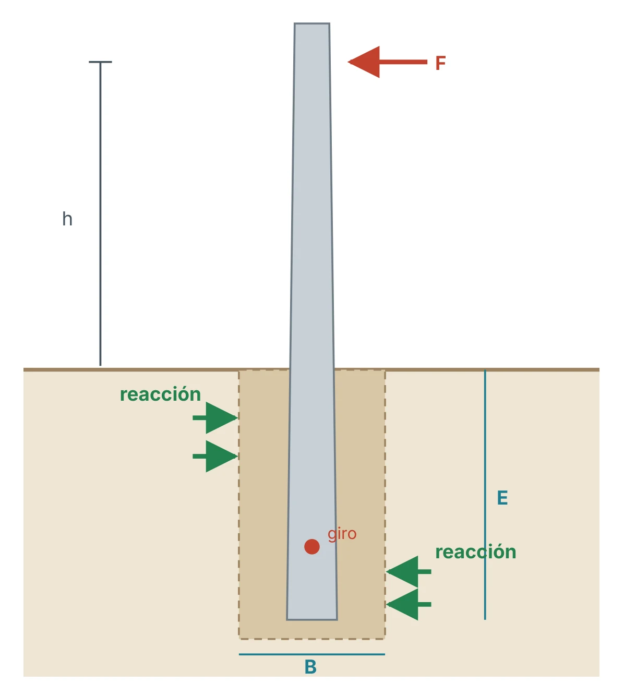
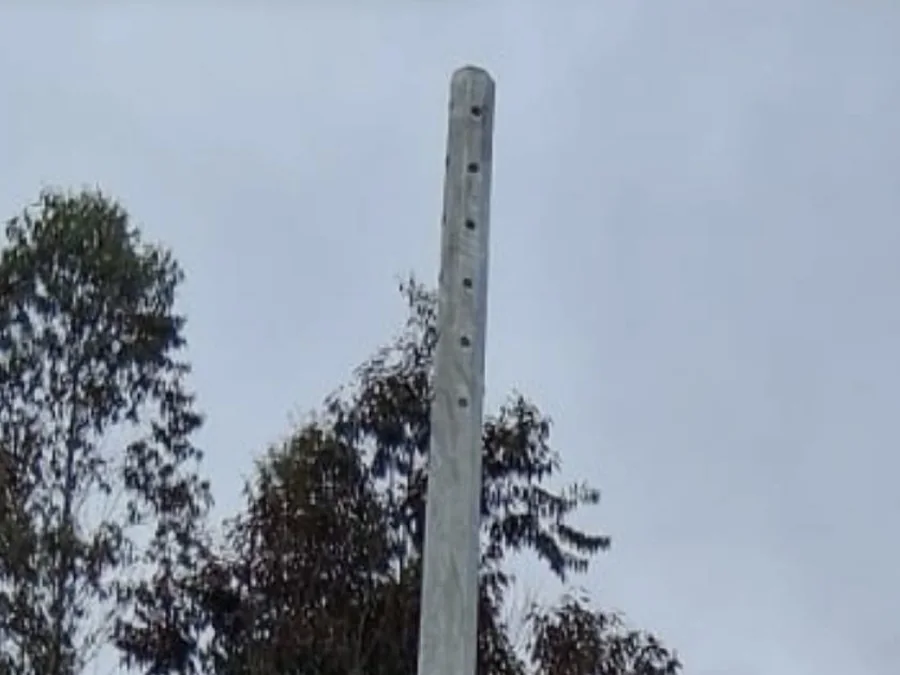
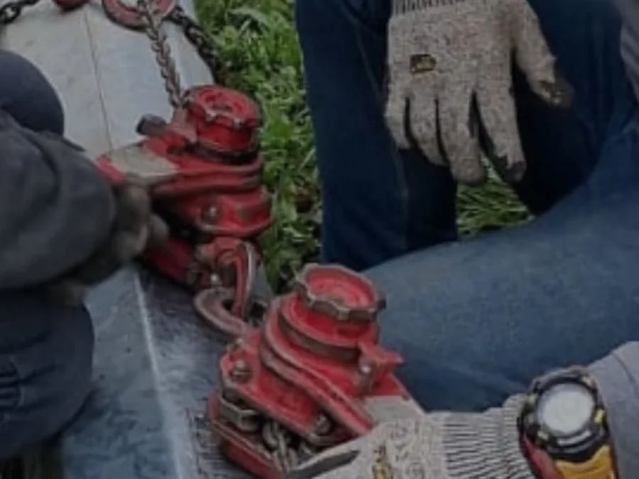
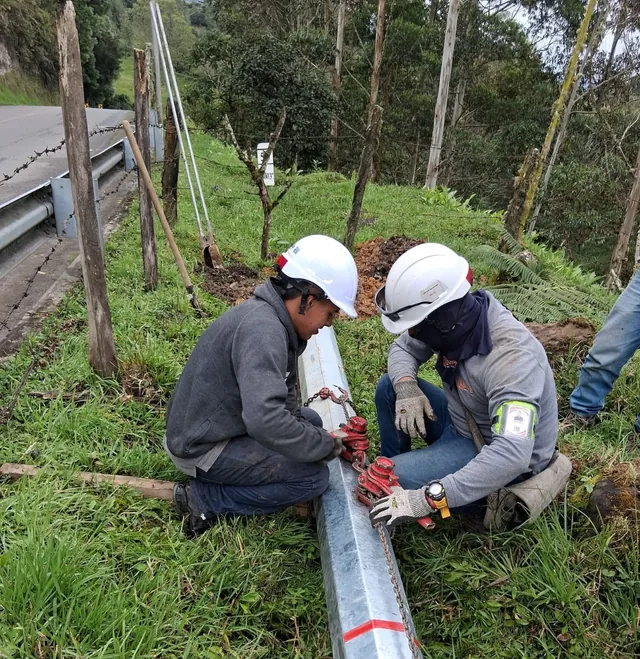
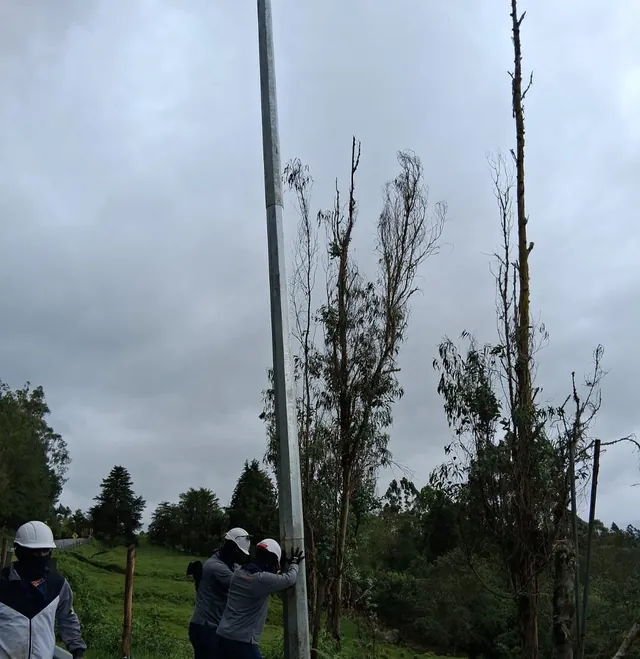

Parte 5
Instalación de postes metálicos
Cubre los pasos 1 a 10 del procedimiento. Ver en YouTube (se abre en otra pestaña)
Instalación de un poste metálico por tramos en una red troncal: excavación, ensamble por traslape, izaje, aplomado y relleno compactado, con los cálculos de campo y los criterios para recibir el poste.
Material de apoyo formativo. Los procedimientos de este módulo son pautas generales de capacitación. En obra se aplican junto con el protocolo de seguridad y salud en el trabajo de la empresa, el diseño aprobado, las instrucciones del fabricante del poste y la norma del dueño de la infraestructura, y no sustituyen el criterio del ingeniero responsable.
Al terminar este módulo, el técnico estará en capacidad de:
Cada riesgo de la tarea tiene su norma colombiana: excavación, izaje, cercanía a redes eléctricas y trabajo en alturas. Las medidas del poste no salen de estas normas, sino del diseño, del fabricante y de la norma del dueño de la infraestructura.
A noviembre de 2026, la guía del módulo no encontró una resolución colombiana específica y vigente para el izaje con grúa: las reglas legales salen del título X de la Resolución 2400 de 1979. Confirme con el responsable de SST de la obra si la empresa adoptó un procedimiento propio. La Resolución 4272 aplica cuando se sube al poste para instalar herrajes o retirar eslingas.
Video 5 de la serie Construcción de redes troncales, producida por NPE, con narración y subtítulos. Registra la instalación de un poste en la Troncal Sibundoy el 19 de septiembre de 2026. Las partes 1 a 3 están en el módulo Redes troncales de telecomunicaciones y la parte 4 en Instalación de retenidas.
Cubre los pasos 1 a 10 del procedimiento. Ver en YouTube (se abre en otra pestaña)
Secuencia de referencia para instalar un poste metálico por tramos. Los pasos siguen el orden de los capítulos del video.
Antes de retirar el soporte temporal: ¿está a plomo en las dos caras? ¿El relleno quedó compactado hasta la superficie? ¿Se sostiene solo, sin moverse, al empujarlo con la mano? Si alguna respuesta es no, el soporte no se retira.
Datos que el video no explica: por qué se sostiene un poste, qué medidas calcular antes de excavar y cuándo detener la maniobra. El tema completo está en la guía técnica de campo (PDF).
El viento, la tensión de la red o un cable nuevo ejercen una fuerza lateral F a una altura h y producen un momento de vuelco M = F × h: la misma fuerza aplicada más arriba hace más momento. El suelo responde con presiones opuestas arriba y abajo del punto de giro, y esa reacción depende de tres cosas que se controlan en obra: la profundidad de empotramiento (E), el diámetro del hueco relleno (B) y la rigidez del relleno.

Como referencia, la norma LA 009-1 de Enel Colombia fija un empotramiento de 1,8 m o 2,0 m para postes de 12 m, según la configuración, y de 2,0 m para postes de 14 m: entre el 14 % y el 17 % del poste queda bajo tierra.
En campo: si al excavar sale piedra, no se deja el poste menos enterrado: con menos empotramiento resiste menos momento. La profundidad la fija el diseño; si no se puede alcanzar, se informa.
La tabla de cimentación da dos valores: el empotramiento E (la parte del poste que queda enterrada) y la sobreexcavación SE (la base compactada bajo el poste). El hueco se excava a la suma: Z = E + SE.
Configuración sencilla, suelo semiblando: E = 1,8 m y SE = 0,3 m, así que Z = 1,8 + 0,3 = 2,1 m. En suelo duro la misma norma reduce SE a 0,15 m: Z = 1,95 m.
En campo: la profundidad se mide antes de bajar el poste y se compara con E + SE del diseño. Si el hueco llega solo a E, no queda espacio para la base y el poste termina menos empotrado de lo diseñado.
El relleno ocupa el cilindro excavado menos el volumen del poste enterrado: V = (π/4 × B² × Z) − (π/4 × d² × E), donde B es el diámetro del hueco y d el diámetro medio del poste enterrado. Las capas se cuentan como Z ÷ espesor de capa.
Con B = 0,60 m y d = 0,25 m: hueco 0,785 × 0,36 × 2,1 = 0,594 m³; poste 0,785 × 0,0625 × 1,8 = 0,088 m³; relleno ≈ 0,51 m³. Con capas de 15 cm: 2,1 ÷ 0,15 = 14 capas, cada una apisonada antes de la siguiente.
B y d son cifras supuestas para practicar.
En suelo blando (capacidad de 0,5 kg/cm² o menos), Enel cambia el relleno a recebo-cemento en proporción 10:1, también compactado en capas de 15 cm.
En campo: un relleno de arena suelta o echado de una vez se acomoda bajo carga y el poste gira antes de que el suelo reaccione. Si el suelo se ve blando o saturado, se reporta para que el diseñador defina el material.
Los dos tramos son cónicos: el superior entra a presión en el inferior y el ajuste se logra por fricción en toda la longitud de contacto. Si entra menos de lo especificado, la unión queda floja y puede girar o separarse con la carga, aunque desde abajo el poste se vea bien. El traslape real lo indica el fabricante; dos especificaciones extranjeras ayudan a entender el criterio:
Traslape de referencia (GRDA, EE. UU.): 1,5 × 220 = 330 mm. Marca de control (INGAL, Australia): 330 + 150 = 480 mm. La marca de control muestra de un vistazo si el tramo entró de más o de menos.
Cifra supuesta para practicar. Estas referencias no son exigibles en Colombia.
En campo: si los raches llegan a su capacidad y el tramo no avanza, se detiene la maniobra. No se ponen extensiones a la palanca, no se golpea la unión ni se le aplica calor: se revisan la alineación y la limpieza de las bocas, y se consulta al fabricante.
Una inclinación que parece mínima en el nivel se convierte en centímetros arriba: δ = H × tan θ, donde δ es el desplome en la punta, H la altura libre del poste y θ la inclinación respecto a la vertical. El valor admisible lo fija el diseño o el operador.
| Inclinación θ | tan θ | Desplome con H = 9 m |
|---|---|---|
| 0,5° | 0,0087 | 7,9 cm |
| 1° | 0,0175 | 15,7 cm |
| 2° | 0,0349 | 31,4 cm |
Altura libre de 9 m: cifra supuesta para comparar.
En campo: se aploma en dos caras a 90° y se vuelve a revisar después de cada capa de relleno. Una desviación se corrige antes de seguir rellenando; con el relleno terminado, corregir exige reinstalar.
La capacidad de una grúa baja a medida que aumenta el radio de trabajo y depende de su configuración (pluma, estabilizadores). Por eso la carga se compara con la tabla de carga para el radio real de la maniobra, sumando los aparejos: % capacidad = (peso del poste + aparejos) ÷ capacidad en tabla al radio × 100.
Eslingas y grillete de 30 kg; capacidad en tabla de 1.200 kg al radio de la maniobra: (450 + 30) ÷ 1.200 × 100 = 40 %. Si el camión no puede acercarse y el radio crece, la capacidad baja y el porcentaje sube: el cálculo se repite con el radio real.
Cifras supuestas para practicar.
La Resolución 2400 de 1979 fija dos reglas: el operador solo obedece al señalero autorizado (art. 414) y nadie permanece ni transita bajo la carga suspendida (art. 420).
En campo: no se iza si el terreno cede bajo los estabilizadores, si no se puede garantizar la distancia a la red eléctrica, si el viento hace girar la carga, si se pierde la comunicación con el señalero o si alguna eslinga muestra daños.
Qué se revisa en cada elemento y cuándo se rechaza. La inspección se hace antes de salir hacia el sitio. Fotografías tomadas del video del procedimiento.

Tramos del posteReferencia y longitud del diseño; galvanizado continuo, marcas de orientación y de traslape visiblesSe rechaza si tiene abolladuras, tramos torcidos, galvanizado desprendido u óxido, bocas del empalme deformadas o marcas ilegibles.

Diferencial de palanca (rache)Se inspecciona antes de cada uso: capacidad marcada, cadena, ganchos, pestillos y frenoSe rechaza si tiene eslabones estirados o torcidos, ganchos abiertos, pestillo faltante o un freno que patina.
 Palín ahoyador y pisónAbre y saca la tierra del hueco; el pisón compacta cada capa
Palín ahoyador y pisónAbre y saca la tierra del hueco; el pisón compacta cada capaSe rechaza si tiene mangos astillados, palas sueltas o la cabeza del pisón floja.
Para comprobar un nivel: se apoya sobre una superficie, se lee la burbuja, se gira 180° en el mismo sitio y se vuelve a leer. Si la burbuja no queda igual, el nivel está descalibrado. Criterios de inspección visual general; prevalecen la ficha del fabricante y las especificaciones del diseño.
| Peligro | Severidad | Control |
|---|---|---|
| Derrumbe o caída al hueco | Alta | Taludes o apuntalamiento según el terreno, material lejos del borde y hueco señalizado mientras esté abierto. Inspección de las paredes después de cada lluvia (Res. 2413). |
| Redes enterradas | Alta | Descartarlas antes de excavar. Si aparece una tubería, una cinta de advertencia o un ducto, suspender e informar. |
| Manos atrapadas en el empalme | Alta | Manos lejos de la unión mientras se hala. Raches inspeccionados y usados dentro de su capacidad. |
| Carga suspendida durante el izaje | Alta | Nadie bajo la carga ni en su trayectoria (Res. 2400, art. 420). Radio de giro delimitado, cuerdas guía desde distancia segura y un solo señalero (art. 414). |
| Caída del poste en el parado manual | Alta | Solo si el procedimiento lo autoriza para el peso y la longitud del poste. Un solo líder, nadie en la línea de caída y el poste sostenido hasta que el relleno lo deja firme. |
| Contacto eléctrico con la pluma, el poste o las cuerdas | Alta | Distancia a la red medida y controlada (Res. 5018, RETIE). Si no se puede garantizar, no se iza. |
| Golpes con los tramos | Media | Ensamble en el suelo, a baja altura y sobre apoyos firmes. Guantes y botas de seguridad. |
| Golpes y esfuerzos al compactar | Media | Pisón con la cabeza asegurada y el mango firme; distancia entre quienes apisonan. |
Señales de un poste mal instalado, su causa probable y qué hacer. Toda falla se reporta y se corrige con procedimiento.
| Señal | Gravedad | Qué hacer |
|---|---|---|
| El poste se inclina días despuésRelleno sin compactar, fondo suelto o suelo saturado. | Crítica | Delimitar la zona de caída, no subir y reportar para reinstalar. |
| La marca roja queda lejos del borde del otro tramoTraslape incompleto. | Crítica | No izar. Revisar la alineación y consultar al fabricante. |
| El empalme gira o se ve una holguraTraslape corto o tramos de referencia distinta. | Crítica | No izar, o descolgar con procedimiento. Verificar las referencias. |
| Grietas o hundimiento alrededor de la baseRelleno que se asienta o agua que lava el material. | Alta | Reportar y revisar la verticalidad. |
| Las perforaciones de la punta no miran a la redPoste girado al izar o al compactar. | Alta | Corregir antes de terminar el relleno; después exige reinstalar. |
| Agua acumulada en el huecoNivel freático alto o lluvia. | Alta | No rellenar sobre barro. Reportar para definir el material. |
| Galvanizado raspado o abolladoGolpes en el transporte o en la maniobra. | Media | Registrar con foto; reparar o rechazar según el fabricante. |
| Desplome distinto en las dos carasAplomado en una sola cara. | Media | Aplomar en ambas caras a 90° antes de seguir rellenando. |
Fotos de la jornada en la Troncal Sibundoy. Haga clic en una foto para verla en tamaño completo.


Una pregunta por cada clave técnica; tres son casos de campo. Respóndala y luego ábrala para comprobar.
Aumenta: M = F × h. Por eso el diseño fija la altura de cada herraje y de cada cable.
A 2,1 m (Z = E + SE). Si se excava solo hasta 1,8 m, no queda espacio para la base compactada.
Se detiene y se informa. Las paredes que ceden exigen talud o apuntalamiento y revisión antes de volver a entrar (Res. 2413, arts. 15, 19 y 22). El suelo blando y saturado cambia la cimentación (Enel usa recebo-cemento 10:1 o una cimentación especial): lo define el diseñador, no la cuadrilla.
El empalme no se acepta: el traslape quedó corto. El tubo haría trabajar el rache por encima de su capacidad nominal y puede romper la cadena o el gancho. Se detiene, se revisan la alineación de los raches y la limpieza de las bocas, y se consulta al fabricante.
Unos 16 cm: 9 × tan 1° = 9 × 0,0175 ≈ 0,157 m.
No en esas condiciones. La distancia a la red se garantiza según el RETIE y la Res. 5018, y con viento que mueve la carga se suspende. Se replantea la posición de la grúa, se coordina con el operador de red o se espera.